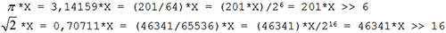
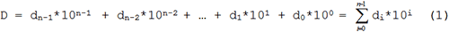
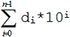

В данной главе речь пойдёт о преобразовании числовых величин из одной формы представления в другую. Наряду с арифметическими операциями данный аспект программирования является основополагающим.
Большая часть информации в электронно-вычислительной системе всегда представлена в позиционном двоичном коде. Система команд любого микропроцессора напрямую поддерживает числа только такого типа. Для взаимодействия с пользователем (когда необходима визуализация или ввод/вывод информации) используется более привычная десятичная система исчисления, что приводит к необходимости отображать в памяти такие данные в виде двоично-кодированных десятичных цифр (двоично-десятичном коде). Помимо этого существует ещё множество других форматов, которые необходимы для реализации интерфейса с разного рода периферийными узлами (микросхемами памяти, логики, датчиками и т.д.). Во всех этих случаях задача преобразования требует частных способов решения.
Изменение масштаба числовых величин
В вычислениях часто приходится умножать числа на какой-либо фиксированный коэффициент. Если этот коэффициент является целочисленной величиной, то проблем не возникает (используется операция целочисленного умножения). Но бывает и так, что константа число иррациональное. Для того чтобы избежать использования арифметики с фиксированной или плавающей запятой, нужно представить иррациональную константу k в виде обыкновенной правильной/неправильной дроби
k = a/b.
В этом случае действие умножения на дробное число k будет сведено к двум целочисленным операциям умножения на числитель a и деления на знаменатель b.
Вычисления могут быть заметно упрощены, если в качестве b выбрать число кратное целой степени 2. Тогда процедуру деления можно будет свести к простому сдвигу делимого вправо на соответствующее число разрядов:

В таких расчётах нужно обращать внимание на очерёдность выполнения арифметических операций. Первой всегда должна следовать операция умножения, а уже за ней деление. После целочисленного деления в общем случае образуется остаток, который, если его не учитывать, вносит в процесс вычислений систематическую погрешность δ. В дальнейших расчётах эта погрешность может многократно возрасти и изменить результат до неузнаваемости. При умножении целого числа X на дробь a/b получим
(X/b + δ)*a = X*(a/b) + a*δ.
На этапе деления была получена абсолютная погрешность δ, которая в итоге возросла в a раз. В тоже время подобного рода погрешность не увеличится, если деление и умножение поменять местами
(X*a)/b = X*(a/b) + δ.
Чем позднее в вычислениях (в порядке следования математических операций) будет внесена погрешность – тем точнее результат будет получен.
Что же касается точности, с которой должен быть представлен множитель k, то, при желании, она может быть сколь угодно велика при соответствующем подборе a и b. Только не всегда стоит к этому стремиться. Если программа обрабатывает n-разрядные данные прототипом, которых являются реально измеренные физические величины, то относительная погрешность их представления не может быть, ниже 1/2n. Это связано как с дискретностью измерений, так и с ограниченной точностью любых измерительных приборов. В этом случае вполне достаточно иметь точность представления k такого же порядка. При использовании встроенного аналого-цифрового преобразователя, разрешение которого составляет 10 значащих разрядов (минимальная относительная погрешность 1/210 ≈ 0,1%), не имеет смысла для умножения результата, например, на k = π/2 √2 ≈ 1,11072… брать больше одного - двух разрядов после запятой (т.е. брать k c точностью более 0,1%).
Преобразование из десятичной системы в двоичную
Самый очевидный способ десятично-двоичного преобразования вытекает непосредственно из формы записи десятичного числа:

Необходимо просто найти сумму

по заданным коэффициентам di. Ниже приведена подпрограмма, преобразования десятичного 4-разрядного числа из диапазона 0…9999 в его двоичный 2-байтовый эквивалент 0…0x270F. Преобразуемое число хранится в SRAM микроконтроллера в виде четырех двоично-кодированных десятичных цифр d4…d0.
|
1 2 3 4 5 6 7 8 9 10 11 12 13 14 15 16 17 18 19 20 21 22 23 24 25 26 27 28 29 |
; R17:R16 <- [YH:YL] ; R17:R16 – двоичное число после преобразования ; [YH:YL] – десятичное преобразуемое шестизначное число, ; лежащее в диапазоне 0…9999 (косвенно адресуется через YH:YL) ; R18,R19 - вспомогательные регистры ; decnum – адрес десятичного числа в ОЗУ
dec4_bin16: ldi YL,low(decnum) ;заносим в указатель Y адрес ldi YH,high(decnum);начала массива чисел d0…d4 clr R17 ;очищаем регистры R17 ld R16,Y ;заносим к R17:R16 число единицы d0 ldd R18,Y+1 ;добавляем к R17:R16 число десятков d1, ldi R19,10 ;умноженное на 10 (d1*10) mul R18,R19 add R16,R0 ldd R18,Y+2 ;добавляем к R17:R16 число сотен d2, ldi R19,100 ;умноженное на 100 (d2*100) mul R18,R19 add R16,R0 adc R17,R1 ldd R18,Y+3 ;добавляем к R17:R16 число тысяч d3, ldi R19,250 ;умноженное на 4*250 (d3*1000) fmul R18,R19 lsl R0 rol R1 add R16,R0 adc R17,R1 ret |
Десятично-двоичное преобразование можно также произвести по схеме Горнера:
D = (…(dn-1*10 + dn-2)*10 + … + d1)*10 + d0 (2)
Такая запись десятичного числа позволяет использовать следующий алгоритм: старший разряд десятичного числа dn-1 умножается на 10 (основание системы), к нему прибавляется следующий разряд dn-2 и полученная сумма dn-1*10 + dn-2 снова умножается на 10 и т.д. Подпрограмма преобразования по схеме Горнера десятичного числа, лежащего в диапазоне 0…65535, в 2-байтовое 0…0xFFFF:
|
1 2 3 4 5 6 7 8 9 10 11 12 13 14 15 16 17 18 19 20 21 22 23 24 25 |
; R17:R16 <- [YH:YL] ; R17:R16 – двоичное число после преобразования ; [YH:YL] – десятичное преобразуемое число, лежащее ; в диапазоне 0…65535 (косвенно адресуется через YH:YL) ; R18,R19,R20,R21 – вспомогательные регистры ; decnum – адрес десятичного числа в ОЗУ
dec5_bin16: ldi YL,low(decnum + 5) ;заносим в указатель Y адрес ldi YH,high(decnum + 5) ;конца массива чисел d0…d5 clr R21 ;очищаем вспомогательный регистр R21 ldi R18,10 ;в дальнейшем R18 будет множителем ldi R20,4 ;инициализируем счётчик циклов ld R16,-Y ;заносим старший разряд dn-1 db1: mul R17,R18 ;производим очередное действие mov R17,R0 ;умножения dn-1*10 mul R16,R18 mov R16,R0 add R17,R1 ld R19,-Y ;берём очередной разряд dn-2 add R16,R19 ;и добавляем к произведению dn-1*10 adc R17,R21 dec R20 brne db1 ;повторяем цикл n-1 раз ret |
С точки зрения требуемых вычислительных ресурсов десятично-двоичные преобразования, проведенные по формулам (1) и (2), примерно равноценны. Оба алгоритма требуют по n-1 операций сложения и умножения. Однако за счёт того, что в схеме Горнера используется умножение на постоянный множитель 10, вместо серии умножений на 10, 100, 1000… , ее использование оказывается более предпочтительным для преобразования многоразрядных чисел (легче организовать умножение в цикле и меньше команд уходит на подготовку множителя).
Преобразование из двоичной системы в десятичную
Двоично-десятичное преобразование встречается на практике чаще, чем десятично-двоичное, но реализуется немного сложнее. Приходится решать обратную задачу определения десятичных коэффициентов по известному двоичному полиному.
В соответствии с (1) все коэффициенты di (разряды десятичного числа, подлежащие определению) могут быть найдены последовательным делением D на 10i. Так после первого деления D/10n-1 получим старший разряд dn-1 как частное и остаток от деления dn-2*10n-2 + … + d1*101 + d0*100. Потом делением остатка на 10n-2 получим очередной разряд dn-2 и т.д.
Подпрограмма преобразования однобайтового двоичного числа в 3-разрядное десятичное приведена ниже. В ней пришлось использовать две операции деления на 100 и на 10.
|
1 2 3 4 5 6 7 8 9 10 11 12 13 14 15 16 17 18 19 |
; R18:R17:R16 <- R16 ; R18:R17:R16 – десятичное число после преобразования ; (R16 - единицы, R17 - десятки, R18 - сотни) ; R16 –двоичное преобразуемое число, лежащее в диапазоне 0…255
bin8_dec3: clr R17 ;очищаем R17,R18 при входе clr R18 ;в подпрограмму subi R16,100 ;вычитаем 100 пока не получим inc R18 ;отрицательную разность brcc PC-2 dec R18 ;корректируем счётчик сотен subi R16,-100 ;корректируем остаток, добавляя 100 subi R16,10 ;вычитаем 10 пока не получим inc R17 ;отрицательную разность brcs PC-2 dec R17 ;корректируем счётчик десятков subi R16,-10 ;корректируем остаток, добавляя 10 ret |
Преобразование однобайтовых чисел по (1), как мы видим, вполне оправдано. Но если понадобиться перевести в десятичное представление, например, 3-байтовое двоичное число, то необходимо будет использовать несколько подпрограмм деления на 10,100,1000 и т.д. Схема Горнера же позволяет обойтись только делением на 10, не зависимо от размера преобразуемого числа.
Первое деление D из (2) на 10 даст самый младший разряд d0 в виде остатка и частное …(dn-1*10 + dn-2)*10 + … + d1. Произведя деление, полученного в предыдущем цикле частного, на 10, определяем следующий по старшинству разряд d1 и т.д. Определение коэффициентов di по схеме Горнера, в отличии от (1), ведется от младшего разряда d0 к старшему dn-1.
Подпрограмма преобразования 2-байтового двоичного числа в 5-разрядное десятичное (десятичные коэффициенты d4…d0 хранятся в SRAM микроконтроллера):
|
1 2 3 4 5 6 7 8 9 10 11 12 13 14 15 16 17 18 19 20 21 22 23 24 25 26 27 28 29 |
; [YH:YL] <- R17:R16 ; [YH:YL] – десятичное число после преобразования ; (косвенно адресуется через YH:YL) ; R17:R16 – двоичное преобразуемое число, лежащее ; в диапазоне (0…0xFFFF) ; R18,R19,R20 – вспомогательные регистры ; decnum – адрес десятичного числа в ОЗУ
bin16_dec5: ldi YL,low(decnum) ;заносим в указатель Y адрес ldi YH,high(decnum) ;начала массива чисел d0…d4 ldi R20,4 ;инициализируем счётчик десятичных цифр bd1: clr R18 ;обнуляем вспомогательный регистр R18 ldi R19,16 ;инициализируем счётчик циклов при делении bd2: lsl R16 ;здесь производится деление V(D)/10 rol R17 ;частное снова заносится в R17:R16, rol R18 ;а остаток в R18 = di andi R16,0xFE cpi R18,10 brcs bd3 subi R18,10 ori R16,0x01 bd3: dec R19 brne bd2 st Y+,R18 ;заносим все di в ОЗУ dec R20 brne bd1 ;деление производится n-1 раз st Y+,R16 ;заносим старший коэффициент dn-1 в ОЗУ ret |
Для двоично-десятичного преобразования существует еще один алгоритм, связанный с использованием двоично-десятичной коррекции результата. По сравнению с приведёнными выше примерами, он требует больших затрат памяти программ и регистров но выполняется с наибольшей скоростью.
Процессор производит все арифметические операции по законам двоичной арифметики и поэтому интерпретирует любые данные именно как двоичные числа. Соответственно, результатом таких операций также являются числа, представленные в двоичном формате. Если используется какая либо иная форма представления чисел, то почти наверняка, любые действия, произведённые над ними, приведут к ошибке. Это произойдёт по тому, что числа, записанные в другом коде (отличном от позиционного), подчиняются и иным математическим законам.
Допустим, мы хотим сложить два однобайтовых двоично-десятичных числа 0x95 и 0x76, которые представляют собой запись десятичных чисел 95 и 76 соответственно (в младших полубайтах записано число единиц, в старших - число десятков), и получить сумму 0x171 (7 десятков, 1 единица, установленный флаг переноса C как сотня) представленную также в двоично-десятичном формате. Однако, после выполнения команды add Rd,Rr будет получено число 0x10B (0x0B и установленный флаг переноса C) и это полностью законный результат с точки зрения двоичной арифметики.
У многих микропроцессоров существует специальная команда, которая осуществляет коррекцию результата сложения, если слагаемые были представлены в двоично-десятичном формате. В нашем случае такая команда преобразовала бы сумму 0x10B в 0x171. Однако у AVR-микроконтроллеров такая инструкция, к сожалению, отсутствует. Тем не менее, двоично-десятичную коррекцию можно легко реализовать программным способом.
Использование двоично-десятичной коррекции совместно с вычислительной схемой Горнера позволяет преобразовать двоичные числа в следующей последовательности:
B = (…(bn-1*2 + bn-2)*2 + … + b1)*2 + b0.
К произведению bn-1*2 прибавляем следующий справа двоичный разряд bn-2 и посредством двоично-десятичной коррекции преобразуем двоичную сумму bn-1*2 + bn-2 в двоично-десятичную форму представления. На следующем этапе точно также производится умножение (bn-1*2 + bn-2)*2 и, после прибавления разряда bn-3, сумма (bn-1*2 + bn-2)*2 + bn-3 снова подлежит коррекции и т.д.
Следующая подпрограмма осуществляет преобразование двоичного трёхбайтового числа, лежащего в диапазоне 0…0xFFFFFF, в десятичное (0…16777215). Вместо серии умножений bn-1*2, (bn-1*2 + bn-2)*2, … в нём используется сдвиг накопителя суммы на 1 разряд влево.
|
1 2 3 4 5 6 7 8 9 10 11 12 13 14 15 16 17 18 19 20 21 22 23 24 25 26 27 28 29 30 31 32 33 34 35 36 37 38 39 40 41 42 43 44 45 46 |
; R22:R21:R20:R19:R18 <- R18:R17:R16 ; R22:R21:R20:R19:R18 - двоично-десятичные числа после ; преобразования (R18 - единицы и десятки, R19 - сотни ; и тысячи,…, R22 - миллионы, R23 - десятки миллионов) ; R18:R17:R16 - двоичное преобразуемое число, лежащее ; в диапазоне (0…0xFFFFFF) ; R23,R24 - вспомогательный регистр
bin24_dec8: clr R19 ;очищаем вспомогательные регистры clr R20 ;R19,R20,R21,R22 при входе в подпрограмму clr R21 clr R22 ldi R24,24 ;инициализируем счётчик сдвигов bc1: lsl R16 ;производим сдвиг 7-байтового rol R17 ;регистра R22:R21:R20:R19:R18:R17:R16 rol R18 ;при этом происходит умножение bn-1*2 rol R19 ;старшего двоичного разряда, а произведение rol R20 ;попадает в R19 rol R21 rol R22 dec R24 brne PC+2 ret mov R23,R19 ;после этого производится rcall bdec_cor ;двоично-десятичная коррекция накопителя mov R19,R23 ;суммы R22:R21:R20:R19 mov R23,R20 rcall bdec_cor mov R20,R23 mov R23,R21 rcall bdec_cor mov R21,R23 mov R23,R22 rcall bdec_cor mov R22,R23 rjmp bc1
bdec_cor: subi R23,-0x03 ;подпрограмма осуществляет sbrs R23,3 ;двоично-десятичную коррекцию subi R23, 0x03 ;числа в регистре R23 subi R23,-0x30 sbrs R23,7 subi R23,0x30 ret |
Преобразование рефлексного кода в позиционный двоичный
Очень редко может возникнуть необходимость в преобразовании чисел, представленных в рефлексном коде (коде Грея) в позиционный код. В приложениях на основе микроконтроллеров данные в коде Грея могут поступать от некоторых датчиков старого типа.
Для преобразования числа B, представленного в позиционном двоичном коде, в число G записанное в двоичном рефлексном коде необходимо произвести операцию “исключающее ИЛИ” между самим числом B и частным, полученным от деления B/2:
G = B ^ (B/2) = bn-1*2n-1 + (bn-2^bn-1)*2n-2 + … + (b2^b1)*21 + b1^b0
Преобразование из рефлексного кода в позиционный (сводится к последовательному определению разрядов bn двоичного числа). Как видно, старший коэффициент bn-1 в позиционном двоичном и рефлексном кодах всегда совпадают. Для определения bn-2 необходимо произвести битовую операцию bn-1^(bn-2^bn-1). Точно также по известному bn-2 определяется bn-3 = bn-2^(bn-3^bn-2) и т.д. Подпрограмма преобразования 16-разрядного числа в коде Грея в его двоичный эквивалент:
|
1 2 3 4 5 6 7 8 9 10 11 12 13 14 15 16 17 18 |
; R17:R16 <- R17:R16 ; R17:R16 – число в рефлексном коде при входе ; и в двоичном позиционном коде при выходе ; R18,R19 – вспомогательные регистры
gr16_pos16: ldi R18,0x80 ldi R19,16 ;инициализируем счётчик сдвигов clc ;обнуляем флаг C при входе в цикл gr1: rol R16 ;сдвигаем число R17:R16 на 1 разряд влево rol R17 brcc PC+2 ;находим очередной разряд bn eor R17,R18 dec R19 brne gr1 ;повторяем операцию n раз rol R16 rol R17 ret |